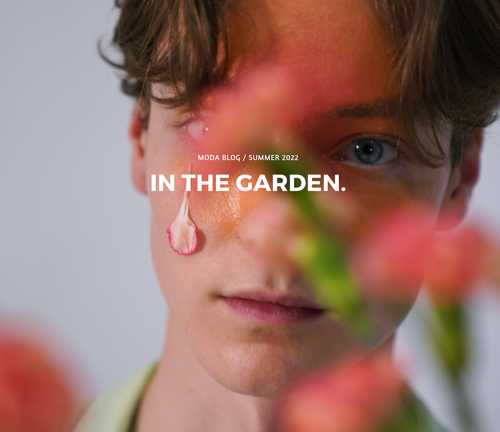
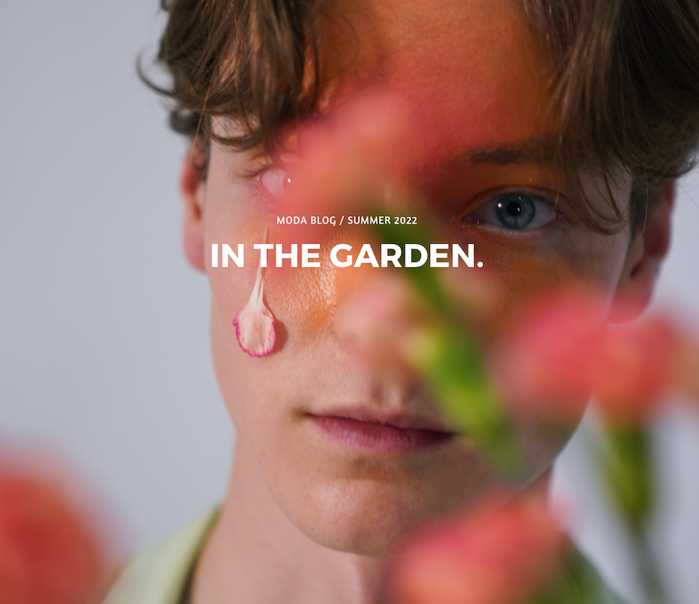

CMU Capstone Research Report
I designed the branding and layout for the 48-page research report for my team's capstone project, working with South Fayette School District.
MODA Blog & Fashion Show
Since 2003, MODA has been a platform dedicated to showcasing fashion on campus, promoting Chicago's style scene, and providing resources to students interested in fashion through events,
quarterly magazine publications, daily blog, and the Designer Boot Camp program.
For three years, I created graphics to promote our digital content and the annual fashion show.
 

Art Museum, Chinese University of Hong Kong
I created a digital magazine inspired by the museum's then-incoming exhibition. I engaged online viewers by linking art historical research with contemporary issues.